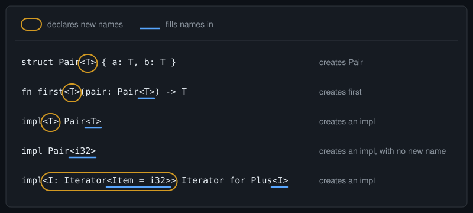
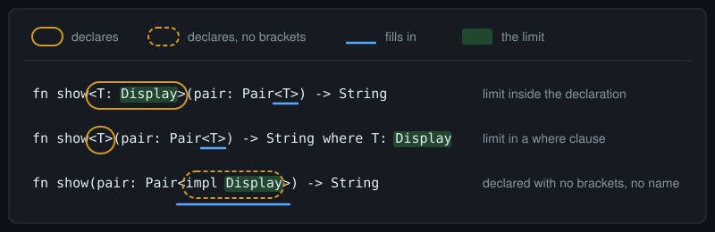

Telex
Telex
Angle Brackets in Rust: Declare, Then Fill In
Rust uses angle brackets for several jobs. This line, from Inside an Iterator Chain, part 2, has three pairs of angle brackets, and they don't all do the same job:
impl<I: Iterator<Item = i32>> Iterator for Plus<I>One rule sorts out most of it:
Brackets on something you're creating declare new names. Brackets on something you're referring to fill in its names.
Here's the rule applied to five lines of Rust:

impl Pair<i32> creates an impl, but declares nothing.This post builds the rule up one case at a time, then reads the last line, bracket by bracket.
Left out: lifetimes, const generics, default types, and qualified paths like <I as Iterator>::Item, which use angle brackets for another job. Every example was compiled with rustc 1.97.0, edition 2024, and compiler errors are trimmed to their key lines.
1. Brackets on a struct you're creating declare a name
struct Pair<T> {
a: T,
b: T,
}This creates Pair, so <T> declares. It makes up a new name, T, for a type to be chosen later. Inside the struct, T can be a field's type, like any other type. Outside the struct, there's no T in scope.
Without the declaration, the compiler has never heard of T:
struct Pair {
a: T,
b: T,
}error[E0425]: cannot find type `T` in this scopeCreating an enum or a trait works the same way.
2. Brackets on a type you're referring to fill in its name
let p: Pair<i32> = Pair { a: 1, b: 2 };This doesn't create Pair. It refers to it. So <i32> fills in the name Pair declared: T becomes i32. Pair<i32> is a complete type, a pair of i32s. Pair alone isn't: write let p: Pair and the compiler reports "missing generics for struct Pair".
On the right of the =, Pair { a: 1, b: 2 } has no brackets either. There, the compiler works T out for itself.
It's the difference between a function's parameters and the arguments you call it with. In struct Pair<T>, T is a parameter. In Pair<i32>, i32 is an argument. Rust calls them generic parameters and generic arguments, and its error messages use those words.
3. Functions work the same way
fn first<T>(pair: Pair<T>) -> T {
pair.a
}This creates first, so <T> declares a name, for this function only. Pair<T> refers to Pair, and fills in its name with this T.
Calling first refers to it, so brackets there fill in its name. In an expression they need a :: in front:
let n = first::<i32>(p);Without the ::, Rust reads first<i32>(p) as two comparisons, first < i32 and then > (p), and says so: "comparison operators cannot be chained". Here you don't need to fill the name by hand, though. first(p) works, because the compiler fills T in from the argument.
4. An impl line often does both
impl<T> Pair<T> {
fn swap(self) -> Pair<T> {
Pair { a: self.b, b: self.a }
}
}This creates an impl block, so impl<T> declares a name for the block. An impl has no name of its own. Its declaring brackets go straight after the keyword instead. Then Pair<T> refers to Pair and fills in its name with that T. Read together: for any type T, here are methods for a pair of Ts.
It looks like saying T twice, and it is. Both are the impl's T: the first declares it, and the second fills in Pair's name with it. The T from struct Pair<T> isn't written here at all. It's the name being filled in. So the impl can use any letter: impl<U> Pair<U> means the same. Skip the declaration, and the T in Pair<T> has nothing to refer to:
error[E0425]: cannot find type `T` in this scope
help: you might be missing a type parameter
|
5 | impl<T> Pair<T> {
| +++Fill in a real type instead, and there's nothing to declare:
impl Pair<i32> {
fn add_up(&self) -> i32 {
self.a + self.b
}
}No brackets after impl, because no new name is made. These methods exist only on Pair<i32>. Call add_up on a pair of &str and the compiler notes that "the method was found for Pair<i32>".
5. A colon in a declaration limits the type
use std::fmt::Display;
fn show<T: Display>(pair: Pair<T>) -> String {
format!("{} and {}", pair.a, pair.b)
}T: Display still declares T. The colon adds a limit: T can be any type, as long as it implements Display, the trait behind {} in format!. That's what lets the body print pair.a.
Drop the limit and the body asks for something T hasn't promised:
error[E0277]: `T` doesn't implement `std::fmt::Display`6. In a function, the same limit can go in three places
Section 5 put the limit inside the brackets that declare T. It can also go in a where clause:
fn show<T>(pair: Pair<T>) -> String
where
T: Display,
{
format!("{} and {}", pair.a, pair.b)
}Or the declaration and the limit can both move into the argument:
fn show(pair: Pair<impl Display>) -> String {
format!("{} and {}", pair.a, pair.b)
}Side by side:

All three accept the same calls, with one exception, at the end of this section.
With a where clause, the brackets go back to one job: declaring. The limit moves after the return type, which can be clearer when there are several. A where clause can also limit things that aren't new names, which the brackets can't:
fn widen<T>(x: T) -> i64
where
i64: From<T>,
{
i64::from(x)
}The limit is on i64, not on T: widen takes any T that an i64 can be made from. There's no declaring bracket for that limit to go in.
impl Display in an argument declares a type parameter and limits it in one go, with no brackets and no name. It doesn't appear in the function's generic parameter list, which here is empty, so there's nothing to fill in by hand. Try the ::<> from section 3, and the compiler says the function has none:
error[E0107]: function takes 0 generic arguments but 1 generic argument was supplied
note: function defined here, with 0 generic parameters7. On an impl, where the limit goes decides which methods have it
A limit in impl<T: Display> applies to every method in the block. A where clause on one method applies to that method alone:
impl<T> Pair<T> {
fn swap(self) -> Pair<T> {
Pair { a: self.b, b: self.a }
}
fn render(&self) -> String
where
T: Display,
{
format!("{} and {}", self.a, self.b)
}
}Take struct Thing;, which has no Display. A Pair<Thing> can still swap. Only render asks for the limit:
error[E0277]: `Thing` doesn't implement `std::fmt::Display`
note: required by a bound in `Pair::<T>::render`Move the limit up to impl<T: Display> Pair<T>, and swap is limited too: "the method swap exists for struct Pair<Thing>, but its trait bounds were not satisfied".
The last place is the struct itself: struct Pair<T: Display>. Then every generic impl or function that names Pair<T> must repeat the limit, even where nothing is displayed. Leave it off and the compiler reports that "T doesn't implement std::fmt::Display", "required by a bound in Pair". An impl for one real type, like impl Pair<i32>, needs nothing, because i32 implements Display.
8. An = fills in a trait's associated type
fn total<I: Iterator<Item = i32>>(items: I) -> i32 {
items.sum()
}The outer brackets declare I, with a limit. The limit refers to Iterator, and the inner brackets fill in one of its names. Not a parameter: Iterator doesn't declare any. The name is Item, an associated type, which the trait declares inside its body with type Item;. Parameters are filled in by position, as in Pair<i32>. An associated type is filled in by name, so the name is written out: Item = i32.
Filling in Item here doesn't set any iterator's Item. Each iterator's own impl does that. It narrows the limit: only iterators whose Item is i32 qualify. Pass one that yields u8s, and the compiler reports: "expected IntoIter<u8> to be an iterator that yields i32, but it yields u8".
Write it as if Iterator had a parameter and the compiler corrects you:
error[E0107]: trait takes 0 generic arguments but 1 generic argument was supplied
help: replace the generic bound with the associated type
|
1 | fn total<I: Iterator<Item = i32>>(items: I) -> i32 {
| ++++++A colon works here too, and means what it meant in section 5: Iterator<Item: Display> accepts any iterator whose items implement Display. It can also move to a where clause: where I: Iterator, I::Item: Display.
9. Now the whole line reads plainly
impl<I: Iterator<Item = i32>> Iterator for Plus<I>Bracket by bracket:
impl<I: ...> creates an impl, so declares I (section 4)
I: Iterator<...> limits I to iterators (section 5)
Iterator<Item = i32> fills in Item: i32 iterators only (section 8)
Iterator for the trait being implemented
Plus<I> refers to Plus, fills its name with I (section 4)The second Iterator has no brackets. It has no parameters to fill in, and its Item can't be given here: an impl sets it inside the block, with type Item = i32;. Write Iterator<Item = i32> for Plus<I> and the compiler says associated item constraints "are not allowed here". The word for marks the type that gets the trait.
Read aloud: for any type I that's an iterator of i32, here's how a Plus holding an I is an iterator.
The limit can move to a where clause here too, as part 2 did for its Apply impl. Then the brackets after impl only declare:
impl<I> Iterator for Plus<I>
where
I: Iterator<Item = i32>,
{What's not here
This post is about reading brackets. A harder question is where a type parameter should go: on a trait, as in trait Process<T>, or on one of its methods, as in fn process<T>. They look alike, but they aren't. On the trait, one type can implement it several times, once for each T. On the method, every implementation has to accept every T the method allows. Choosing between them needs a post of its own.